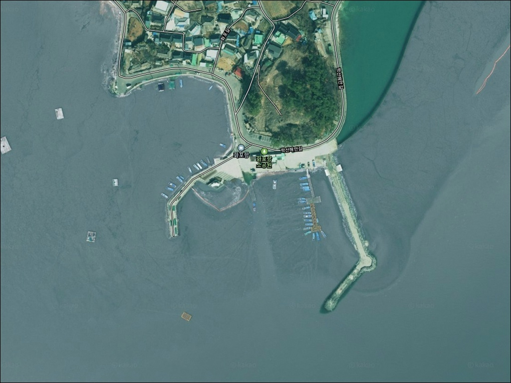
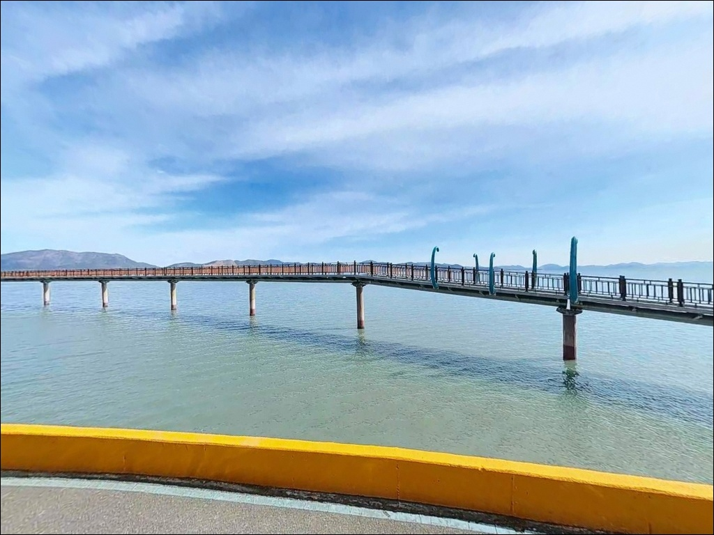
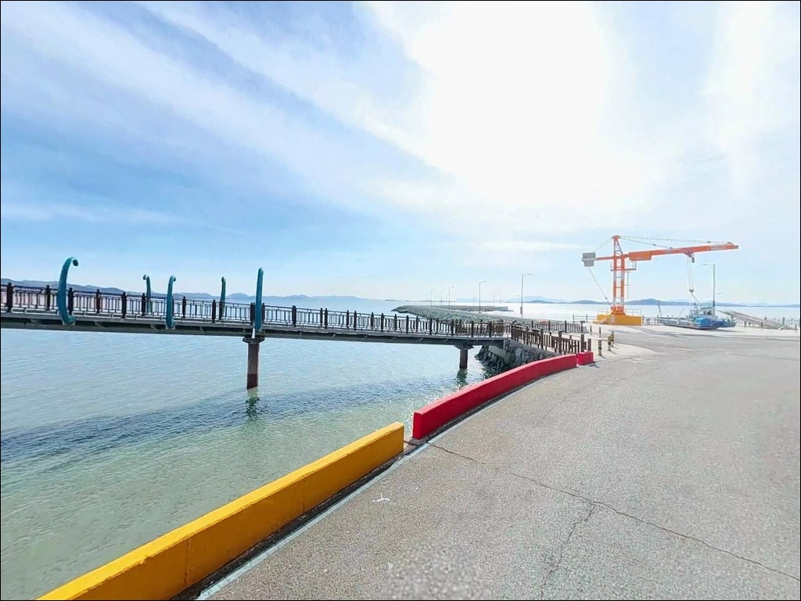
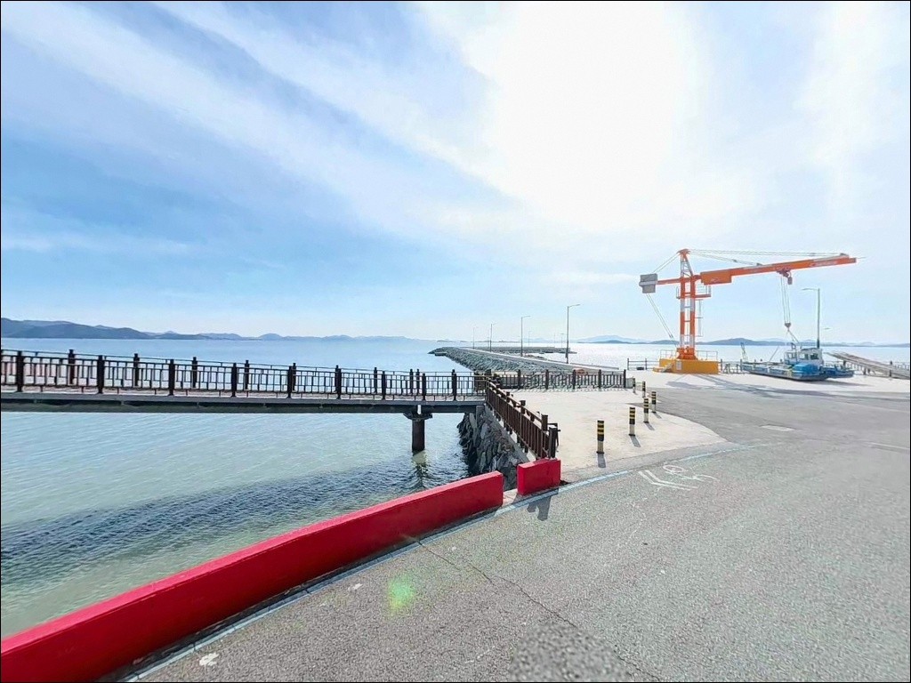
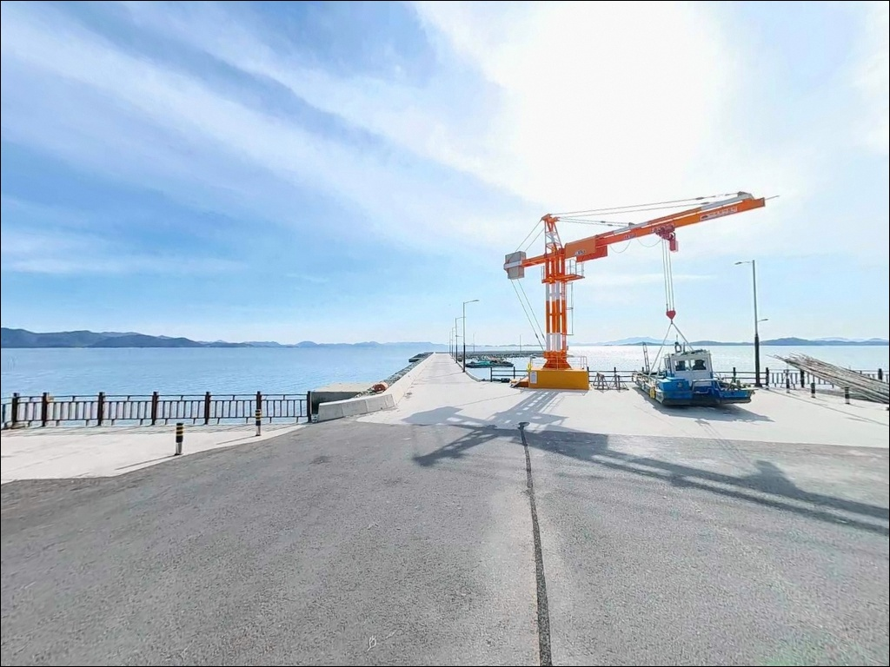
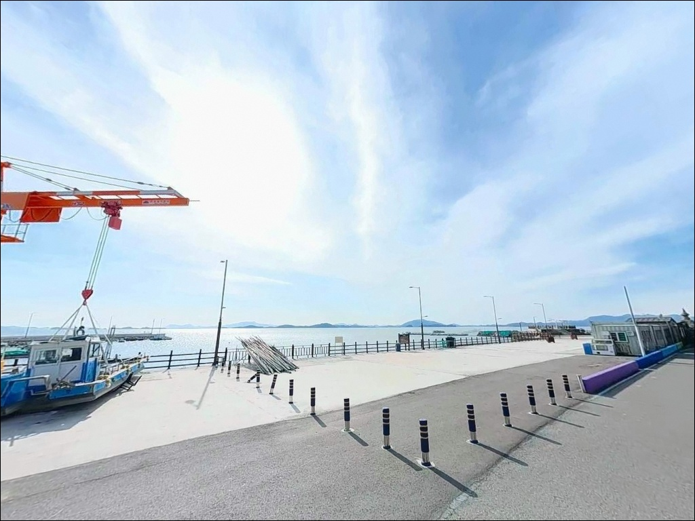
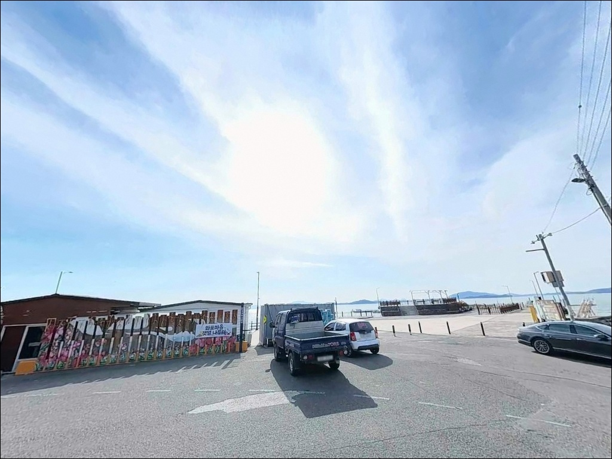
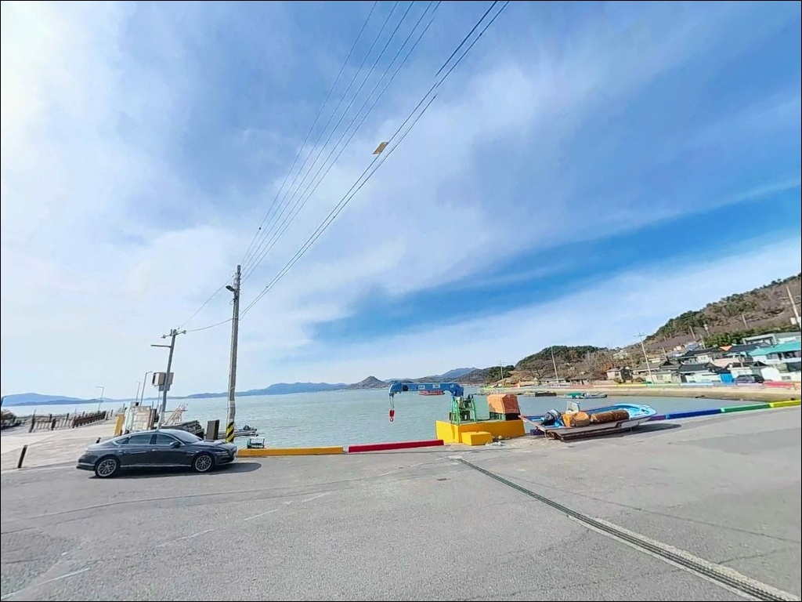
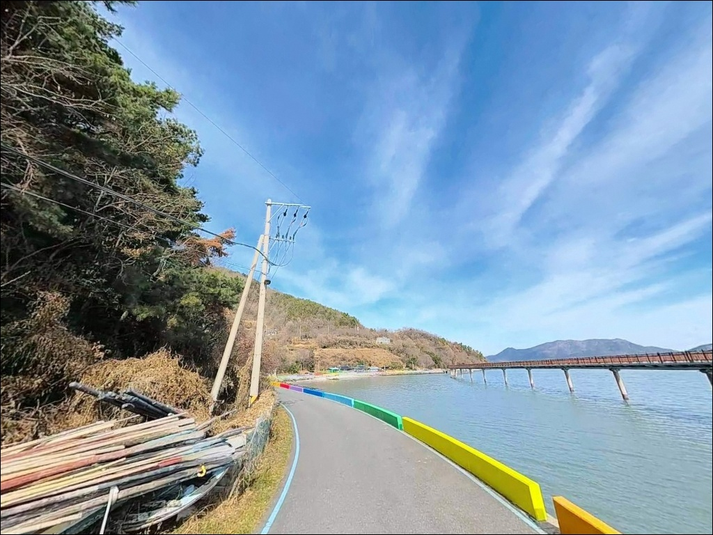

순천만 화포항 원투낚시, 만조 전후 3시간에만 들어오는 입질


포인트 안내
화포항
전남 순천시 별량면 학산리 805-1
이 포인트에서 가장 많이 틀리는 판단은
물때 확인 없이 도착하는 것입니다.
간조 시 갯벌이 모두 드러나
낚시 가능 자리 자체가 사라지며,
만조 전후 2~3시간을 벗어나면
채비를 내릴 수심조차 확보되지 않습니다.
화포항은 순천만 내측 갯벌과 직접 맞닿은
전형적인 내만형 지방어항입니다.
1972년 지정된 지방어항으로
방파제 111m, 물양장 125m 규모이며,
어촌뉴딜 300 사업 이후 항내 공간이
일부 정비되어 있습니다.
이 글은 화포항의 물때 판단 기준,
진입 동선, 낚시 방식 적합성,
차박 체류 여건에 집중합니다.
조황 단정이나 특정 어종 보장은
이 글의 범위에 포함되지 않습니다.

1. 진입 동선과 포인트 접근성
화포항으로 향하는 주요 진입로는
학산해안길과 벚꽃길 두 경로입니다.
두 경로 모두 포장 상태가 안정적이며
경사가 완만해 일반 승용차부터
중형 SUV까지 진입에 무리가 없습니다.
다만 별량면 소재지를 거쳐
우명항 방향으로 접근하는 경로는
왕복 2차선 이하 농어촌 도로 구간이 포함되며,
대형 캠핑카나 장축 차량은
출발 전 경로를 위성지도로 확인하는 편이 안전합니다.
항 내부 및 입구 방향에서
회차가 가능한 구조이며,
화포 일출 전망대 주차장은
아스팔트 포장된 평탄 공간으로
30대 이상 수용이 가능합니다.
방파제 인근 도로변과
화포해변 연결부 공터도
주차 후보로 활용할 수 있습니다.

2. 차박 환경과 야간 체류 여건
화포항 일대는 화포해변과 맞붙어 있는
일출 명소로 알려진 곳입니다.
일출 전망대 관리 목적으로 가로등이 설치되어 있어
야간 시야 확보는 양호한 편이며,
화포마을 자체는 소규모 어촌마을로
야간 차량 통행이 적고 조용한 편입니다.
순천만 내만형 구조이지만
항 전면이 개방된 갯벌 지형이라
바람 영향을 직접 받는 구조입니다.
기상에 따라 풍속 변화가 클 수 있어
체류 전 기상청 예보 확인이 먼저입니다.
새벽 시간대 일출 방문객이 유입될 수 있으므로
주차 공간 과도 점유나
취사 도구 외부 설치는 자제하는 편이
매너에 맞습니다.


3. 주변 편의시설 및 인프라 현황
화포항 인근에는 화장실이 확인됩니다.
일출 전망대 공중화장실이 운영 중이며
항구 인근에 소형 매점과 카페가
위치해 있습니다.
주차장은 화포 일출 전망대 부지에
30대 이상 수용 가능한 정비된 공간이
확인됩니다.
편의점이나 마트는 항 직접 인근에서는
기대하기 어렵습니다.
별량면 소재지 방향으로 이동해야
식당가와 소형 마트를 이용할 수 있으며,
순천 시내까지는 차량으로
15~20분 거리입니다.
주요 소품과 식수는 출발 전 준비하는 것이
시간 손실을 줄이는 방법입니다.

물때 모르고 찾아가면 헛걸음이 되는 이유
화포항 방문 전 가장 먼저 확인할 것은
물때입니다.
이 포인트는 간조 시 갯벌이 완전히 드러나
사실상 낚시가 불가능해집니다.
만조 전후 2~3시간이
낚시 가능 시간대의 전부라고 봐야 합니다.
바다타임에서 학산리 기준 물때를 확인하고
들물 초입 타이밍에 맞춰 출발 시각을
역산하는 것이 기본 전략입니다.
순천만 갯벌 지역 특성상
간조 시 갯벌 안으로 들어가는 행위는
수렁 위험이 있으므로
접근하지 않는 것이 원칙입니다.
야간 낚시 시에는 헤드랜턴과
구명조끼를 반드시 챙기고,
방파제 테트라포트 위 이동은
야간 기준 금지로 보는 것이 안전합니다.
화포항은 순천만국가보호구역
(람사르습지) 인근에 해당합니다.
갯벌 생태 훼손 행위는 금지되어 있으며,
낚싯줄·봉돌·미끼통은
현장에서 반드시 수거해야 합니다.
어선 정박 구간의 그물·통발 접촉도
피해야 합니다.

5. 지형 기반 낚시 여건 분석
화포항의 낚시 여건을 결정하는 핵심 요소는
뻘바닥과 조석 간만의 차입니다.
항 전면이 순천만 갯벌과 직접 연결된 구조로
전 구간 연질 갯벌(뻘) 저질이 깔려 있습니다.
암초나 갯바위는 없으며,
밑걸림 걱정 없이 채비를 운용할 수 있는
환경입니다.
조류는 창조류 1.8kn, 낙조류 1.6kn 수준으로
내만형 항치고는 체감 흐름이 있는 편입니다.
만조 시 선착장 끝단 기준 수심은
2~4m 내외로 형성되며,
이 수심 구간이 확보되는 시간대가
원투낚시 효율이 살아나는 타이밍입니다.
방파제 외항 측 끝단부에서
수심 변화가 비교적 뚜렷하게 나타납니다.
이 해역 갯벌 환경에서
기대해 볼 수 있는 어종은
붕장어, 숭어, 망둥어 계열입니다.
계절 영향보다 물때 영향이 훨씬 크게 작용하는 구조로,
같은 날이라도 조석 타이밍에 따라
조과 차이가 확연합니다.
출조 전에 화포항 조황을 꼭 검색해 보시기 바랍니다.


6. 포인트에 어울리는 낚시 스타일
이 포인트에서 가장 잘 맞는 낚시 방식은
원투낚시입니다.
뻘바닥 환경에서 채비를 멀리 내보내
수로 방향 수심층을 노리는 방식이
화포항 지형 조건과 일치합니다.
들물 초입부터 만조까지
집중 공략 시간대를 압축해서 운용하는 것이
이 포인트의 기본 전략입니다.
민장대와 릴찌낚시도 적용해 볼 수 있습니다.
갯벌 가장자리 수로가 형성되는 만조 전후
선착장 벽면과 내항 계류 구간에서
숭어 접근 시 대응하는 방식입니다.
가벼운 채비로 수면 가까이를 노리는 구성이
이 지형에서 어울립니다.
갯벌 낚시도 순천만 특유의 방식으로
적용할 수 있습니다.
선착장 인근 갯벌 가장자리에서
망둑어 계열을 대상으로 하는 방식이며,
장화 또는 웨이더를 갖춘 경우에 한해
갯벌 경계 구간을 탐색해 볼 수 있습니다.
갯벌 안쪽 깊숙이 들어가는 행위는
수렁 위험이 있어 금지입니다.

7. 대안 포인트와 플랜 B 동선
화포항 물때가 맞지 않거나
자리 여건이 여의치 않을 때는
우명항이 첫 번째 대안입니다.
화포항에서 약 3km 거리로
접근 경로상 통과하는 항입니다.
같은 순천만 해역 패턴을 공유하므로
물때 조건과 어종 구성이 유사합니다.
더 넓은 수심을 원한다면
와온방파제 방향을 고려할 수 있습니다.
화포항에서 순천만 건너편으로
약 7km 거리에 위치하며,
순천만 낙조 명소로도 알려진 곳입니다.
화포항보다 낚시 인지도가 높고
수심 조건도 다소 나은 편입니다.
창산항도 같은 순천만권 포인트로
방파제 구조 유사도가 높습니다.
화포항·우명항·와온방파제를
순차적으로 묶어 이동하는 동선이
이 권역에서 가장 효율적인
대안 루트입니다.

물때를 알면
화포항이 달라 보입니다
원투낚시를 즐기는 낚시인이라면
화포항의 뻘바닥과 수로 구조는
밑걸림 없이 채비를 운용할 수 있는
조건을 갖춘 편입니다.
망둑어나 붕장어를 대상으로
들물 타이밍 집중 공략을 즐기는 분이라면
잘 맞는 스타일의 포인트입니다.
반면 물때 확인 없이 무작정 도착하거나,
간조 시간대에 맞춰 방문하면
낚시 자리가 갯벌로 전환되어
사실상 낚시가 불가능합니다.
물때 확인, 진입로 사전 체크, 자급 준비,
이 세 가지를 갖추고 출발하면
순천만 갯벌 특유의 조용한 낚시터를
온전히 즐길 수 있는 곳입니다.
일출 전망대와 해변이 함께 있어
낚시 후 새벽 일출을 보고
하룻밤을 마무리하는 차박 여행자에게도
바람 조건만 맞는다면 좋은 선택이 될 수 있습니다.